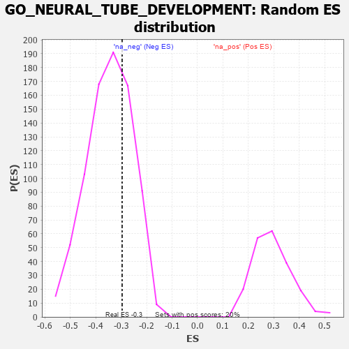

| | | Dataset | 7d |
| Phenotype | NoPhenotypeAvailable |
| Upregulated in class | na_neg |
| GeneSet | GO_NEURAL_TUBE_DEVELOPMENT |
| Enrichment Score (ES) | -0.29648843 |
| Normalized Enrichment Score (NES) | -0.85622114 |
| Nominal p-value | 0.68592966 |
| FDR q-value | 0.9766512 |
| FWER p-Value | 1.0 |
Table: GSEA Results Summary
 Fig 1: Enrichment plot: GO_NEURAL_TUBE_DEVELOPMENT
Fig 1: Enrichment plot: GO_NEURAL_TUBE_DEVELOPMENT
Profile of the Running ES Score & Positions of GeneSet Members on the Rank Ordered List
| PROBE | GENE SYMBOL | GENE_TITLE | RANK IN GENE LIST | RANK METRIC SCORE | RUNNING ES | CORE ENRICHMENT | | 1 | ST14 | | | 7 | 5.713 | 0.2056 | No |
| 2 | SUFU | | | 443 | 0.665 | 0.1748 | No |
| 3 | ALX1 | | | 590 | 0.598 | 0.1780 | No |
| 4 | GLMN | | | 632 | 0.583 | 0.1939 | No |
| 5 | HES5 | | | 661 | 0.571 | 0.2110 | No |
| 6 | DVL3 | | | 971 | 0.490 | 0.1898 | No |
| 7 | SSBP3 | | | 1396 | 0.411 | 0.1511 | No |
| 8 | LIAS | | | 1524 | 0.387 | 0.1491 | No |
| 9 | FZD1 | | | 1574 | 0.379 | 0.1566 | No |
| 10 | PLOD3 | | | 1715 | 0.353 | 0.1518 | No |
| 11 | TCF7 | | | 1848 | 0.328 | 0.1470 | No |
| 12 | BMP7 | | | 2107 | 0.290 | 0.1249 | No |
| 13 | SALL4 | | | 2523 | 0.223 | 0.0807 | No |
| 14 | KDM6A | | | 2690 | 0.200 | 0.0670 | No |
| 15 | PAX6 | | | 3170 | 0.127 | 0.0112 | No |
| 16 | NF1 | | | 3713 | 0.040 | -0.0557 | No |
| 17 | SKI | | | 3762 | 0.032 | -0.0606 | No |
| 18 | ITPK1 | | | 3851 | 0.020 | -0.0710 | No |
| 19 | SFRP2 | | | 4065 | -0.018 | -0.0972 | No |
| 20 | ABL1 | | | 4125 | -0.027 | -0.1037 | No |
| 21 | RALA | | | 4416 | -0.079 | -0.1374 | No |
| 22 | SETD2 | | | 4443 | -0.084 | -0.1376 | No |
| 23 | PTK7 | | | 4687 | -0.136 | -0.1633 | No |
| 24 | LHX2 | | | 4716 | -0.143 | -0.1617 | No |
| 25 | SMO | | | 5195 | -0.247 | -0.2130 | No |
| 26 | FKBP8 | | | 5296 | -0.270 | -0.2159 | No |
| 27 | STIL | | | 5483 | -0.314 | -0.2280 | No |
| 28 | BBS4 | | | 5806 | -0.407 | -0.2539 | No |
| 29 | STK4 | | | 6145 | -0.518 | -0.2778 | Yes |
| 30 | IFT52 | | | 6280 | -0.566 | -0.2742 | Yes |
| 31 | IFT57 | | | 6307 | -0.579 | -0.2566 | Yes |
| 32 | MKS1 | | | 6607 | -0.715 | -0.2684 | Yes |
| 33 | TMED2 | | | 6665 | -0.746 | -0.2487 | Yes |
| 34 | C2CD3 | | | 6783 | -0.802 | -0.2344 | Yes |
| 35 | WDR19 | | | 6796 | -0.812 | -0.2066 | Yes |
| 36 | MIB1 | | | 6932 | -0.890 | -0.1915 | Yes |
| 37 | OVOL2 | | | 7197 | -1.068 | -0.1861 | Yes |
| 38 | PKD1 | | | 7628 | -1.611 | -0.1821 | Yes |
| 39 | CASP3 | | | 7747 | -1.902 | -0.1283 | Yes |
| 40 | TRAF6 | | | 7818 | -2.157 | -0.0592 | Yes |
| 41 | PKD2 | | | 7822 | -2.167 | 0.0188 | Yes |
Table: GSEA details [plain text format]

Fig 2: GO_NEURAL_TUBE_DEVELOPMENT: Random ES distribution
Gene set null distribution of ES for GO_NEURAL_TUBE_DEVELOPMENT